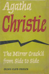
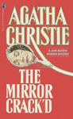
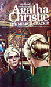
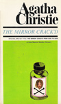
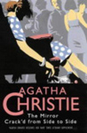
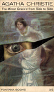
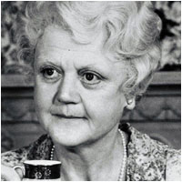

The Mirror Crack'd from Side to Side is a work of detective fiction by Agatha Christie and first published in the UK by the Collins Crime Club on 12 November 1962 and in the US by Dodd, Mead and Company in September 1963 under the shorter title of The Mirror Crack'd.
It is set in the fictional English village of St. Mary Mead and features Miss Marple. It was dedicated by Christie: "To Margaret Rutherford, in admiration." The novel received good reviews on publication, for "the shrewd exposition of what makes a female film star tick", and being easy to read, though the plot was not as "taut" as some of Christie's novels. A later review found it "one of the best of her later books" and liked the way that "the changes in village life and class structure since the war are detailed".
The title of the novel comes from the poem The Lady of Shalott by Alfred, Lord Tennyson.






Screen Versions
In 1980, Angela Lansbury played Miss Marple in The Mirror Crack'd (directed by Guy Hamilton). The film featured an all-star cast that included Elizabeth Taylor and Rock Hudson. Edward Fox appeared as Inspector Craddock, who did Miss Marple's legwork. Lansbury's Marple was a crisp, intelligent woman who moved stiffly and spoke in clipped tones. Unlike most incarnations of Miss Marple, this one smoked cigarettes.
A second adaptation of the novel was made by BBC television in 1992 as part of its series Miss Marple with the title role played by Joan Hickson (in her final performance as Jane Marple). The only major changes were that Giuseppe is not killed, Alfred Badcock is not a former husband of Mariana Gregg, Superintendent Slack and Sergeant Lake are written in and the character of Hailey Preston is removed. The novel was the final adaptation for the BBC. Margaret Courtenay appeared in this adaptation as Miss Knight, having previously portrayed Dolly Bantry in the 1980 feature film version.
ITV produced another adaptation for the Agatha Christie's Marple series starring Julia McKenzie, with Joanna Lumley reprising her role as Dolly Bantry. Investigating the murder along with Miss Marple is Inspector Hewitt, played by Hugh Bonneville. This version, while ultimately faithful to Christie's original text, included a number of notable changes. Some of these changes were influenced by the changes that were made in the 1980 film adaptation.



David Horovitch
Norman Rodway
Jonathan Hales & Barry Sandler